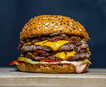
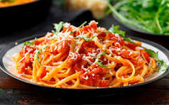

Pizza
Pasos
- Preparar la masa mezclando la harina, agua, levadura y sal.
- Amasar y dejar reposar la masa hasta que aumente su tamaño.
- Estirar la masa y colocarla en una fuente para horno.
- Agregar la salsa de tomate, el queso y los ingredientes elegidos.
- Hornear hasta que la masa esté dorada y el queso derretido.
Hamburguesa

Pasos
- Preparar la carne y formar las hamburguesas.
- Cocinar las hamburguesas en una sartén o plancha.
- Cortar el pan y preparar los ingredientes.
- Colocar la carne, el queso, la lechuga, el tomate y los condimentos.
- Cerrar la hamburguesa y servir.
Pasta

Pasos
- Hervir agua en una olla y agregar sal.
- Colocar las pastas en el agua cuando comience a hervir.
- Cocinar las pastas durante el tiempo indicado en el paquete.
- Escurrir las pastas y agregar la salsa elegida.
- Mezclar y servir las pastas calientes.